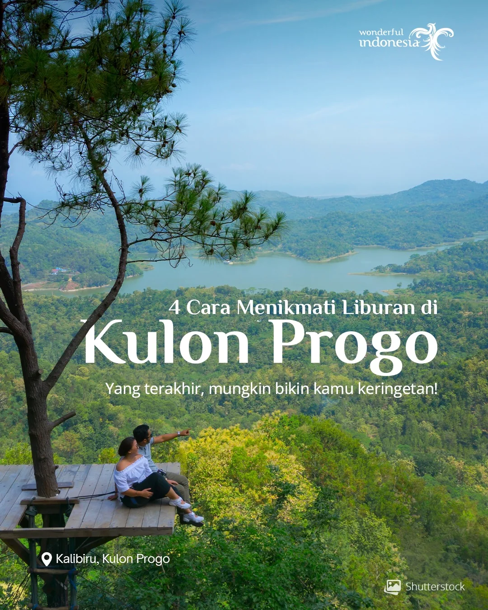
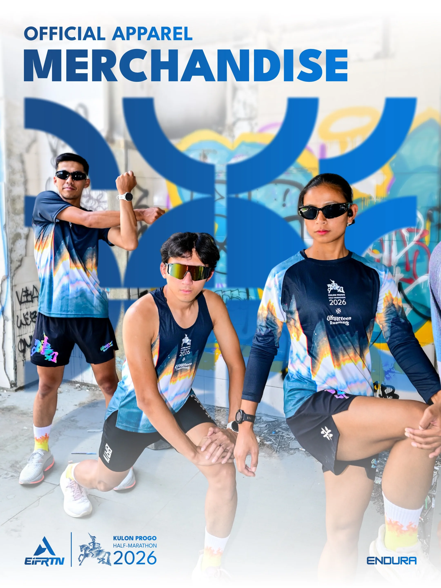
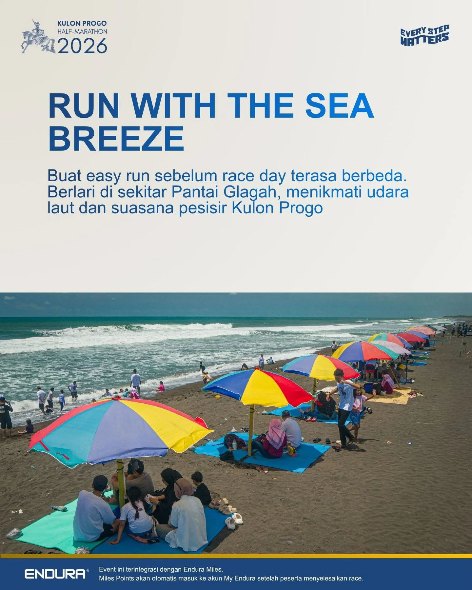
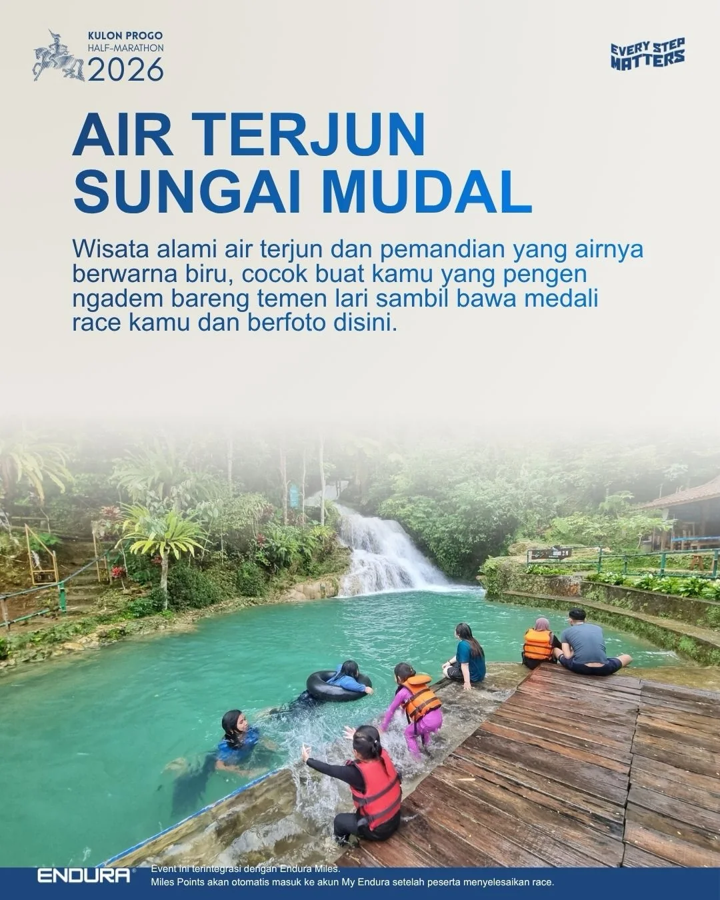
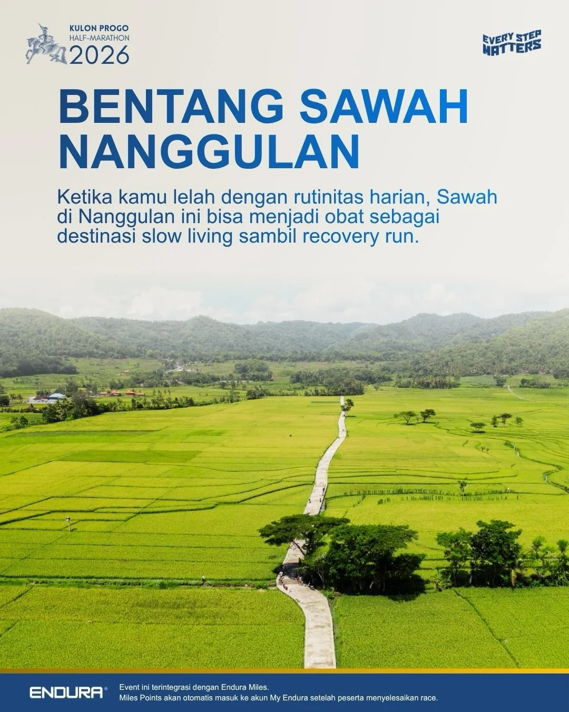
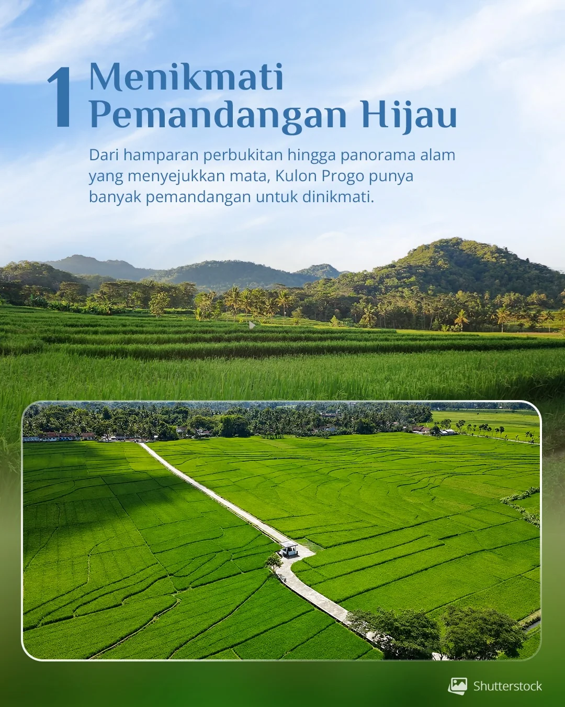

Half Marathon
21,1 km
- Disarankan tiba
- 03.15 WIB
- Start
- 04.30 WIB
- Batas waktu
- 08.30 (4 jam). Titik cut-off: KM 11,8 (2 jam 15 menit) dan KM 19,4 (3 jam 45 menit)
A RUNNER'S FIELD GUIDE — YOGYAKARTA, INDONESIA
Satu akhir pekan untuk mengejar personal best, menikmati lanskap, dan menemukan sisi lain Kulon Progo.
01 / THE BIG PICTURE
Perjalanan yang dirancang mengikuti ritme seorang runner.
Sabtu untuk eksplorasi yang terukur. Minggu untuk race, recovery, dan pulang dengan cerita baru. Pilih destinasi, susun rute, dan sesuaikan semuanya dengan energi serta jadwal resmi event.
RACE INFORMATION
Race village, start, dan finish: Alun-Alun Wates. Junior Dash memakai titik start dan finish terpisah di alun-alun.
Rute ke Alun-Alun Wates ↗21,1 km
10,5 km
5,2 km
0,74 km
27–28 November 2026, 10.00–20.00 WIB
ibis Yogyakarta International Airport
Jl. Wates–Purworejo KM 10 95, Temon Kulon, Temon, Kulon Progo
Sumber: materi resmi KPHM 2026. Cek email dan kanal penyelenggara untuk perubahan terbaru.
02 / YOUR WEEKEND, YOUR PACE
Wisata pilihan, pemandangan, makan dengan nyaman, lalu kembali lebih awal untuk race preparation.
↘Fokus pada race. Setelah finish, prioritaskan hidrasi, nutrisi, dan recovery sebelum aktivitas ringan.
↘03 / THE ROUTE
Rencana awal yang fleksibel. Ubah waktu, tambahkan tempat, dan sesuaikan dengan lokasi race serta akomodasi Anda.
04 / GO A LITTLE FURTHER
Mulai dari lanskap alam hingga tempat untuk mengisi energi. Informasi operasional dan biaya perlu diverifikasi sebelum kunjungan.
＊ Informasi destinasi merupakan data awal / needs verification. Periksa akses, jam buka, cuaca, dan kondisi terkini sebelum berangkat.
05 / GETTING THERE
Peta demo menampilkan area tujuan secara konseptual. Aktifkan Google Maps API untuk pencarian tempat dan rute langsung.
Integrasi Google Maps dapat diaktifkan melalui pengaturan API di README.
06 / MAKE IT YOURS
Tempat yang dipilih, anggaran, dan persiapan race tersimpan di browser perangkat ini.
Belum ada destinasi. Tambahkan tempat dari Discover.
07 / KPHM 2026 · EXPLORE THE PLACE
Pilihan visual dari materi resmi KPHM 2026: lanskap, pengalaman perjalanan, dan atmosfer race weekend.







Foto dan materi visual berasal dari arsip aset KPHM 2026 yang disediakan. Keterangan destinasi mengikuti materi sumber dan tetap perlu diverifikasi sebelum dijadikan panduan perjalanan.
08 / OFFICIAL EVENT KIT
Materi visual resmi untuk membantu peserta mengenali informasi event. Pastikan detail operasional selalu merujuk pembaruan penyelenggara.